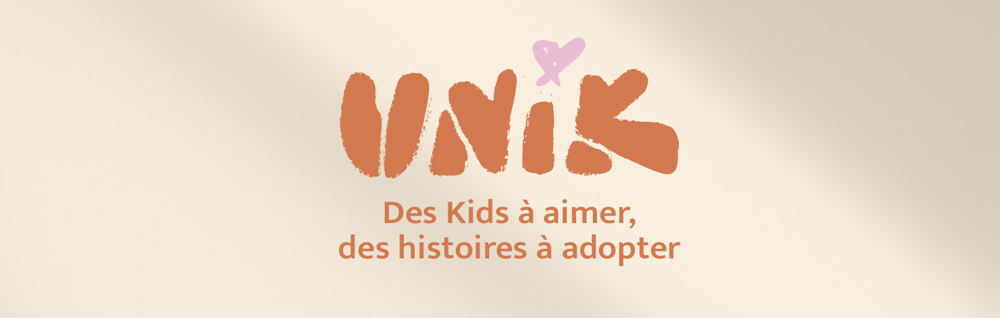
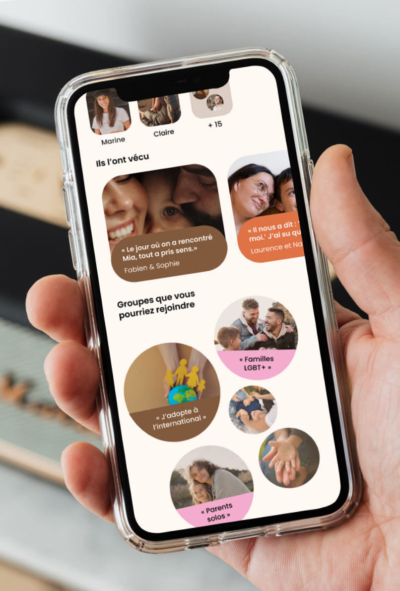
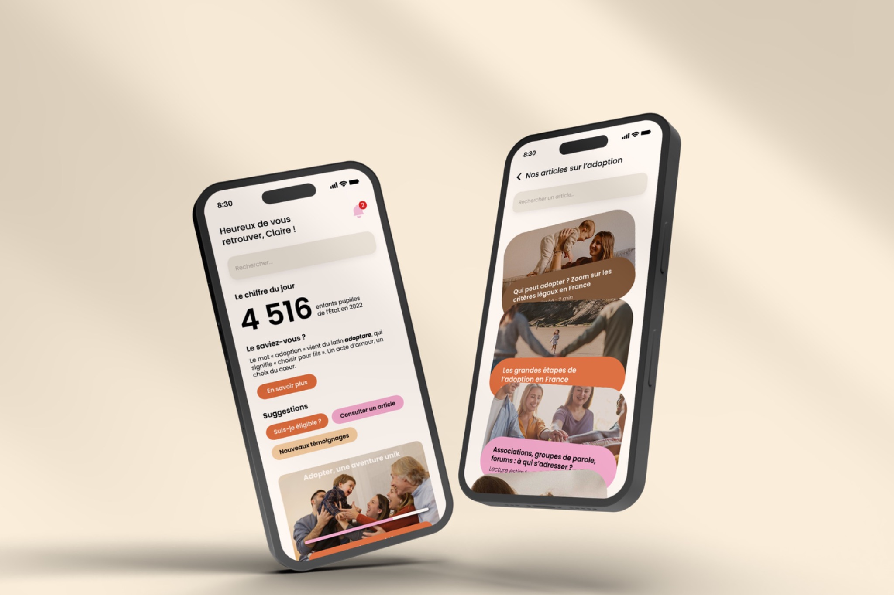
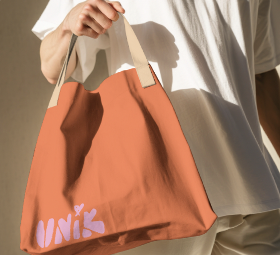
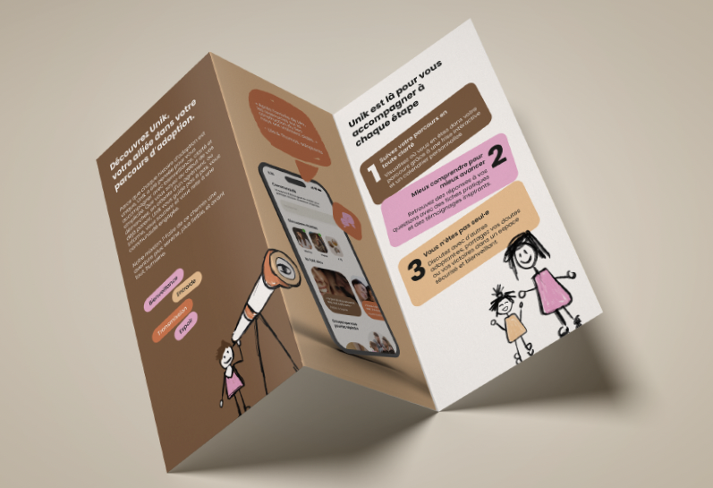
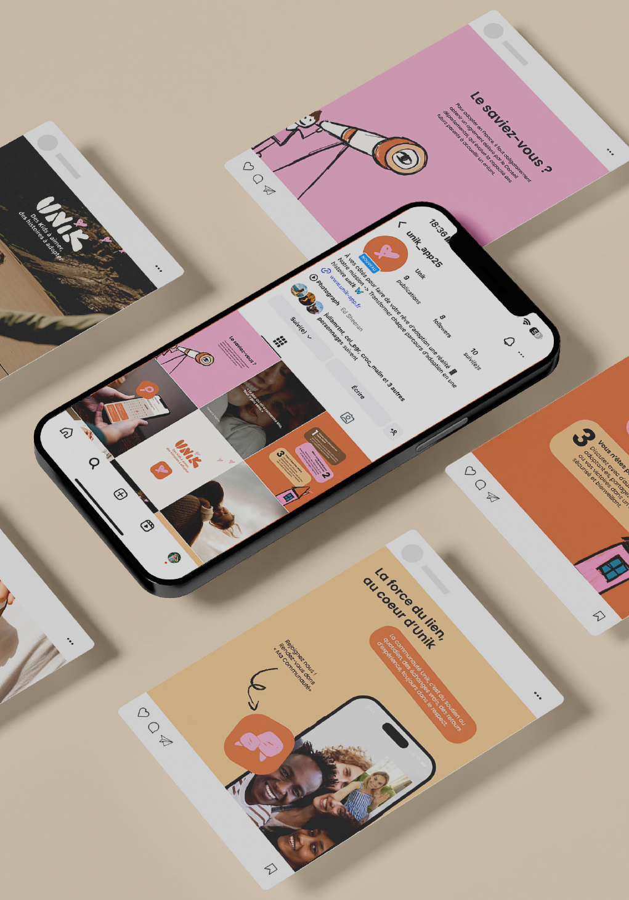

Unik, 2025
Manque d’accompagnement, démarches longues et complexes, solitude… nombreuses sont les raisons qui font que chaque année des potentiels futurs parents perdent espoir et finissent par abandonner leur projet d’adopter un enfant. C’est pourquoi j’y ai vu là l’opportunité de faire bouger les choses, en créant une application et sa campagne de communication dédiées à l’accompagnement de ces hommes et de ces femmes qui désirent adopter un enfant. Étant moi-même une enfant adoptée, ce projet me porte particulièrement à cœur.
Le projet en image






Bien plus qu’une application
À travers un parcours personnalisé, des articles par thématique, une communauté bienveillante et des outils concrets, Unik aide chaque futur parent à avancer sereinement. Plus qu’un guide, c’est un espace de soutien, d’échange et de sens, où chaque histoire d’adoption est unique. La campagne de communication autour de l’application met en avant une dimension humaine et engagée, dans le but de sensibiliser à la fois les futurs parents, les professionnels de l’adoption et le grand public.
Projet suivant